インストーラー実行
インストーラーを起動します。 [Next] をクリックします。
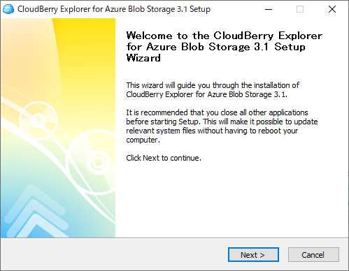
[I Agree] をクリックします。
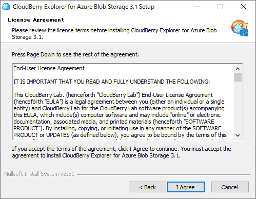
[Install] をクリックします。
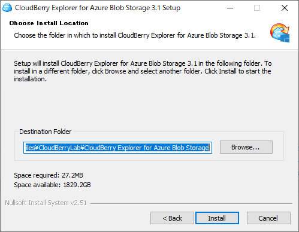
[Finish] をクリックします。
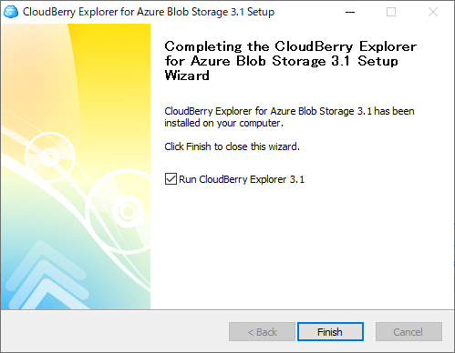
Freeware edition を選択し [Next] をクリックします。
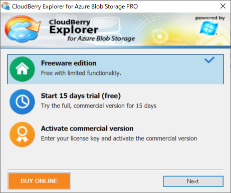
ダイアログが出たら [OK] をクリックします。
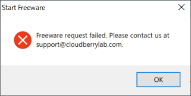
もう一度 [Next] をクリックします。
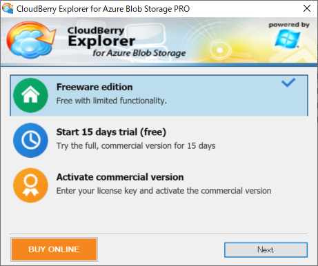
[Proxy Setting] をクリックします。
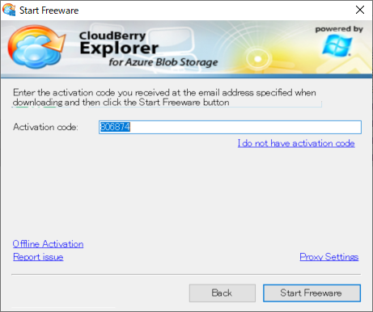
プロキシを設定する必要がある場合は [Manual proxy configuration] をチェックし Address，Port を指定します。
プロキシ認証が必要な場合は [Use authenticvation] をチェックしプロキシ認証で使用しているユーザ，パスワードを入力し [OK] をクリックします。
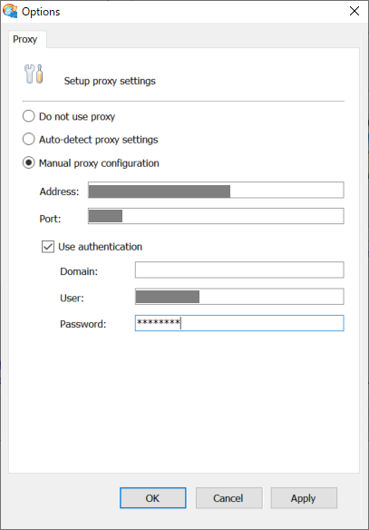
[Start Freeware] をクリックします。
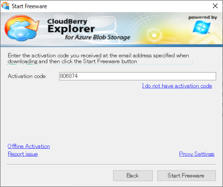
CloudBerry Explorer を Azure ストレージアカウントに接続する
[Azure File] をダブルクリックします。
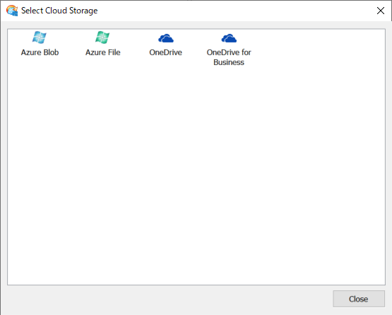
Azure のストレージアカウントの情報を入力します。
入力内容はプロジェクトごとに異なるので管理者に聞きましょう。
入力したら [Test Connection] で接続出来るか確認し問題なければ [OK] をクリックします。
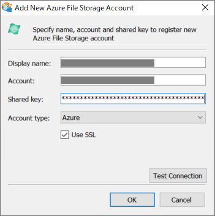
以上で Azure のストレージアカウントに接続しローカルのファイルを Azure に移動することが出来るようになります。
左にローカルのディレクトリを，右に Azure のストレージアカウントを表示します。
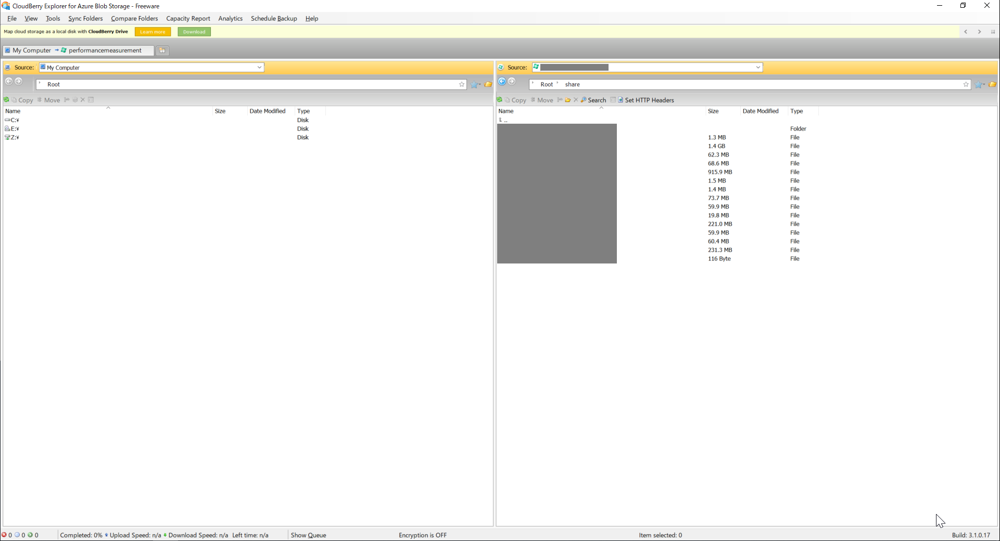